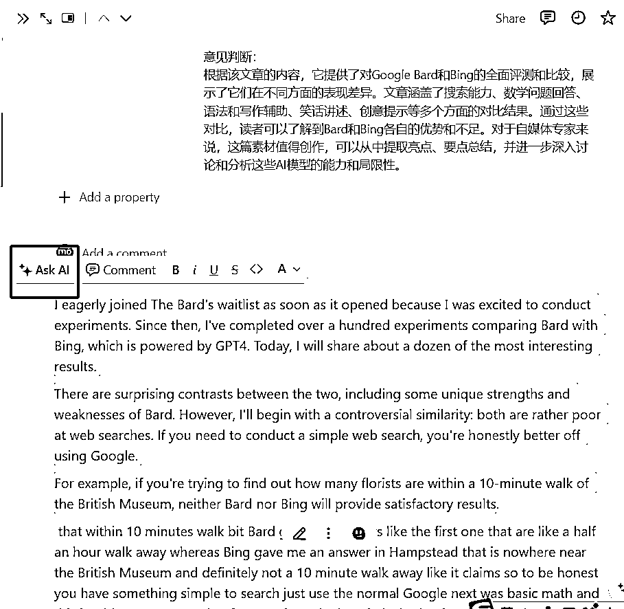

来源：https://ia0969wpr2.feishu.cn/docx/CUMNdRxLloAFv8xLvDbcEA0anFf
大家好，我是钱小鲤，下面是我前一段时间内使用影刀做的一部分机器人，趁着这次做总结的机会分享给大家，因为是自己的实际在跑的部分流程，所以不讲噱头不谈变现，只是把这些流程直观地呈现给大家，希望能对大家有帮助。
这篇文章主要有五部分，主要是从数据采集、二次创作、然后借助heygen进行数字人生成、通过moviepy和剪映进行剪辑，最后进行平台分发。整个流程都是通过影刀RPA，主要节点都通过自动化的形式进行，只有选题、内容把控需要人工介入。
下面是各部分的主要内容
第一部分是素材收集，如何使用影刀进行数据采集，包括推特、YouTube、抖音、小红书平台的文章/图片/视频无水印下载与详细信息采集等。
第二部分介绍如何使用影刀进行自动化注册heygen
第三部分介绍如何借助coze/notion 等进行快速内容创作
第四部分介绍如何使用影刀通过以上加工的文案进行自动化数字人创作、下载与剪辑
第五部分介绍如何使用影刀进行多平台分发。
借助多账号和RPA调度，我们可以每天采集超过百万条数据，然后继续通过RPA或者使用GPT-4分析筛选出点赞评比异常的爆款，之后使用GPT-4进行内容再创作、批量图文创作、批量数字人视频制作，这一切不需要任何的人为干预，只需要梳理完我们的需求和流程，借助影刀都可以轻松实现，无疑是放大项目的利器。
下面所有的RPA流程在视频的最后都有源码展示，如果对大家有帮助可以直接参考复现。
下面是正文
这部分的主要内容包括：
抖音、小红书、推特等平台的关键词搜索、博主个人主页批量采集等功能
支持关键词搜索采集、博主个人主页采集、作品分享链接数据采集和图文视频无水印下载、自动跳过已下载。
采集范围包括：昵称、粉丝数、关注数、历史获赞、用户标签、标题、时长、视频标签、视频相关词、点赞数、评论数、收藏数、分享数、视频背景音乐等。
下载的范围包括：视频、视频封面、视频音乐、用户头像。
主流程运行流程后会要求用户选择采集信息，比如根据关键词搜索、采集个人主页所有作品、采集合集、采集音乐下的所有视频等，然后根据我们选择的采集类型输入后续的必须字段，比如按搜索采集则需要输入关键词，按主页采集需要填写用户主页等，还有一些其他的可选字段，比如是否下载视频图文，保存地址等。这里使用影刀的对话框实现即可
这里以个人主页抓取为例，搜索或合集大同小异，首先我们打开个人用户地址，开始进行监听网页请求。
数据的抓取这里并没有使用影刀的“数据抓取”功能，而是使用了网络监听，之所以使用这种方式是因为他的采集效率更高，可以采集的数据范围更广，包括视频的各类详细信息、用户标签、关联词等都可以一次性采集，更多的数据对于我们的分析也会更有帮助，容易发现潜藏的异常点。
监听的请求为作品内容返回接口，获取到返回内容后，我们可以直接把数据样例扔给GPT-4，让他完善解析逻辑，然后直接复制到影刀进行调用就可以。有了GPT这些都不是问题。
监听请求之后我们就可以进行滚动了，只要页面能够正常显示作品数据，我们的影刀就可以拿到这些信息，之后就是解析这些数据入库excel就可以了。
这段是下载的流程，我们首先判断进入应用时是否选择了视频下载，因为下载视频是比较慢的，如果我们只是想采集作品的基础数据的话可以暂不勾选下载视频。
如果需要下载视频的话，我们在刚刚拿到的数据里面已经有了视频的原始链接，可以通过影刀下载也可以调用python模块进行下载，我是使用的后者，因为相对来说效率更高一些，不懂的直接问GPT就好了，代码百分百可用，不用自己修改一行。
下面就是采集完成之后的数据了，我们以董宇辉为例，300多条数据在不到一分钟的时间内采集完毕（当然不包括视频下载，勾选下载的话时间会长很多）。采集的信息包括：昵称、粉丝数、关注数、历史获赞、用户标签、标题、时长、视频标签、视频相关词、点赞数、评论数、收藏数、分享数、视频背景音乐，当然比以上更详细的视频数据也都保存了下来，单独保存在下载文件夹的json中，如果需要的话可以在作品对应的文件夹中查看。。
这些信息对于我们分析对标账号已经足够了，我们还可以继续通过GPT-4对这些作品的点赞评藏等异常比率进行进一步的数据分析。
这里就不一一截图了，实现思路和抖音基本一致，源码见演示视频的最后面。在关键词采集这部分之所以没有使用数据抓取还是相同的原因，影刀自带的数据抓取采集范围有限而且速度比较慢，使用监听可以一次性拿到更多的数据。考虑到需要使用python，完全不懂代码的小伙伴依然可以使用“数据抓取”功能（实际描述清楚需求之后代码可以全部由GPT4生成）
采集后数据如下：
同上，在演示的最后有主要流程可以参考。和抖音小红书不同，对于推特这种页面元素经常变动不好定位的网站，如果使用RPA进行采集就只能采取这种方式了。
这部分主要内容为如何使用影刀进行自动化注册heygen
现在heygen会限制区域，我们注册或登录的时候会提示：不支持的区域。同时在注册的时候也会出现谷歌的验证码，这些问题如何低成本地解决呢？
地域限制通常是基于浏览器指纹来判断的。服务商会通过分析用户的浏览器设置、区域和语言信息来确定地理位置。为了巧妙规避这一限制，我们可以采用两种方法。第一，手动调整浏览器的设置，以更改区域和语言信息，从而使网站认为用户位于支持的区域。
另一个更为方便且无限制的解决方案是使用专门的指纹浏览器。这类浏览器能够自定义设置用户特征，轻松绕过地域限制。我推荐大家使用第二种方法。
那如何使用影刀操作指纹浏览器呢？
这里我们使用的是免费的Hubstudio，这是一款免费的、建立在Chromium基础上的指纹浏览器。因为Hubstudio免费版是不能使用API进行操作的，所以为了方便（省钱），我们只使用一个实例环境进行注册即可，如果如要切换实例，使用影刀识别之后再次操作下也是可以的，实测可行。
下面是影刀操作指纹浏览器的教程
首先我们在影刀页面选择设置-自动化插件
出来一下弹窗，点击“添加自定义浏览器自动化”
在弹出框中点击“手动选择”
这时我们找到自己的Hubstuio的安装目录即可，比如我的目录如下：D:\Program Files\Hubstudio\Hubstudio.exe，选择的时候注意选择大写的Hubstudio.exe
确定后等待片刻就添加成功了
浏览器添加成功后，我们打开Hubstidio，点击资源，选择扩展中心，添加影刀插件，插件是影刀控制浏览器自动化的前提，所以一定不要落下这一步。
这时我们登录heygen进行注册或登录测试，发现已经没有问题了，接下来就可以继续我们的自动化注册流程了
heygen是通过邮箱注册的，所以核心问题是我们要有无限的邮箱才能进行注册，那如何获取无线邮箱呢？当然我们可以在淘宝买，或者卡gmail特殊字符的bug，但是这样总归是不方便，而且自动化程度也不高，邮箱个数也是有限制的，在这推荐大家购买一个自己的域名即可，一般便宜的只需要十几块钱，再搭配cf一键配置catch-all邮箱，这样只需要一个域名，我们就可以有真无限的邮箱了，对于我们注册其他服务也更方便了。
使用cloudflare配置无线邮箱的步骤如下：
首先登录cf：https://dash.cloudflare.com/
如果我们没有域名，可以点击菜单栏中的第二个“Domain Registration”进行注册。拥有自己域名之后直接点击进入，然后点击左侧菜单中的Email
点击开始使用
在这我们可以先随便填写一个自定义地址即可，目标位置填写自己的个人邮箱，我在这里使用的163邮箱，推荐大家也注册163邮箱，这样在影刀里面获取邮件的时候会比较方便，我之前使用的是Gmail，但是因为众所周知的原因，网络会偶尔不通导致流程中断，使用国内邮箱会流畅一些。
点击创建并继续，借着点击“继续”
走到下面这个页面的时候我们可以不用管这些配置，默认cf会帮我添加好的，我们点击“添加记录并启用”就可以了
等待DNS配置完成后，我们点击“路由规则”
点击catch-all状态中的切换栏，改为开启状态
开启之后点击编辑
这是我们选择我们刚刚设置的邮箱就可以了，这样，任何发送到*@example.com的邮件都会转发到你填写的目标邮箱里面，我们就可以通过影刀获取验证码了
走到这一步我们就有了无限的邮箱了，下面就可以继续heygen的注册流程了
下面是整个的注册流程：
与之前比起来，heygen现在添加了人机验证，在影刀里解决这个问题也很简单，我们可以参考下面文章:
可以参考影刀论坛的这篇文章：https://www.yingdao.com/community/detaildiscuss?id=bcbf5e50-ffeb-463c-a1f4-248f1b145241&from=detaildiscuss&sort=createTime&tag=软件使用问题&page=1
不要看起来很长就头大，其实很简单，操作也相当直接，五分钟就可以搞定，总结起来就是使用yescaptcha进行识别，具体方法分为两种：一种是使用影刀平台上的“谷歌recaptcha验证码”功能；另一种则是浏览器安装yescaptcha的扩展插件。
第二种安装扩展插件的方法是最简单，插件地址为：https://chromewebstore.google.com/detail/yescaptcha-人机助手/jiofmdifioeejeilfkpegipdjiopiekl?hl=zh-CN
安装完成插件后我们还需要密钥才能自动化识别，我们可以去yescaptcha注册，首次注册有1500积分，可以使用100次，购买的话一块钱1000点，大概可以使用60次左右，平均每次打码不到2分钱。价格相对来说还是可以接受的。不想充钱可以多注册几个号，实测下来识别准确率很高。重点是！当我们第一次识别成功之后大概率之后就不会有人机认证了，所以免费的点数已经足够基本上已经足够了。
yescaptcha可以从下面链接进行注册：
https://yescaptcha.com/i/hEJLBX
具体的注册过程就不演示了，一路点击到底就可以了，然后我们把这个密钥拷贝到插件中的这个位置，这时候人机验证就可以自动通过了。
下面就是获取邮箱验证码，我们可以直接使用影刀自带的“获取邮件”，在高级中我们设置收件人、发件人信息。从而获取验证码。这里我们异常设置为重复获取三次，每次等待5秒钟。
整个过程完毕之后，实测下来大概1分钟左右可以注册一个账号，总体上效率还是可以接受的。
coze就不用多介绍了吧，财大气粗的字节旗下的AI自动化平台，GPT-4 128k免费用，还有海量的插件，支持自定义workflow，在一定程度上，我觉得比GPTs要更好用，功能也更强大。我们可以把第一部分中采集到的数据通过coze进行再次创作，二创为适合数字人口播的文案，也可以自定义自己的workflow，在一个机器人中给定一个主题，同时根据不同指令生成文章、标题、图片、资料收集整理等。
当然coze也可以使用GPTs代替，有很多圈友分享过如何使用RPA操作ChatGPT进行内容创作的教程，这里我就不再赘言了。
首先我们需要注册coze账号（需要使用魔法）
coze.com
接下来我要根据自己的创作工作流使用GPT-128K创作一个wf，简化后的结构图如下：
当然这是一个非常简单的工作流，实际流程我们可以自定义，同时添加知识库、插件、外部接口等。
根据流程图我们首先新增一个LLM，根据用户输入生成口播文案
然后对生成的口播文案进行标题、标签和推荐语生成
OK ,然后我们随便网上摘抄一段话，输入测试，下面是返回的结果，效果勉强可以，但是我们仍然有优化prompt外挂知识库微调的空间，：
{
"script_title": "1. 🚀老实人vs聪明人，规则是枷锁还是翅膀？\n 2. 🌟别被规则绑架！聪明人的逆袭秘方大揭秘\n3. 💥规则不是铁板！如何像大佬们一样灵活变通？\n4. 🎯守规矩还是变通？区分高手的关键决策！\n5. 🛡️别让规则束缚你！学会这招，游刃有余\n6. 🧠【建议收藏】老实人如何学会聪明人的大智慧？\n7. 🎲规则是橡皮泥？大佬们的游戏规则揭秘！\n8. 🛫从规则的枷锁中解脱，聪明人的上天秘籍！\n9. 🤫老实人必看！掌握这技巧，规则也能成翅膀\n10. ✨审时度势，老实人的逆流转变攻略！",
"script_tags": "#励志 #人生哲理 #规则意识 #灵活变通 #职场技巧 #社会洞察 #成功心态",
"script_first_title": "《规则是铁板还是橡皮泥？解锁人生高手秘诀！》",
"script_content": "你知道老实人和聪明人最大的区别吗？老实人总觉得规则是铁板一块，一寸不许动。但聪明人？他们知道，规则就像橡皮泥，关键时刻可以灵活变通。而真相是，制定规则的大佬们，可从来没打算把自己套进去。他们设下规则，其实是为了让别人跟着走，自己却能从中受益。那么，我们应该怎样在这个世界上游刃有余呢？关键在于，审时度势，知道何时该守规矩，何时可以巧妙利用规则。别小看这个能力，它可是区分普通人与高手的关键。记住，不要让规则成为束缚你的枷锁，而应是助你翱翔的翅膀！"
}
接下来就可以使用影刀批量对我们刚刚采集的优秀爆款借助coze进行口播批量创作了，创作完成后直接导出到我们的Excel第二个sheet页，用做下面的数字人制作的文案素材。
最后我关于coze我再多说一句，coze很强大！我们可以借助插件和workflow完成很多有想象力的事，比如图文并茂的文章、批量洗稿等，而且有GPT-4的加持，质量秒杀大部分的”洗稿神器“，大家可以多多探索。
作为Notion的重度用户，对我来说，Notion早就成了日常工作不可缺少的一部分。去年Notion也集成了NotionAI，再加上它本身就是专注于文本创作的，单纯的创作，在某些场景之下可能比GPT会更好用一些。
所以在进行素材采集的时候我都会把所有数据都同步到Notion中，包括在社交媒体的点赞文章、点赞推文、每天的热点信息、热门项目等等每天都会自动同步到Notion，搭配上NotionAI，在任何地方都可以阅读+创作，效率max。

下面是在Notion上面的素材自动采集数据，第一个是YouTube的素材库，主要是我关注的一些channel，和一些特定的关键词同步的数据，包括视频的所有详情，以及自动转录后的文本。NotionAI支持数据表中添加自定义AI字段，每当数据更新的时候AI字段也会同步更新，可以添加多个如总结、重写等AI块，非常方便批量创作。
当然对于每篇文章也可以精细化修改，选中文本后可以使用不同提示词对文本进行再次创作，借助Notion AI可以快速地去提升文本质量。Property和Notion AI进行总结，方便我阅读,总体效果还是不错的。

同步推特点赞部分是我每天在推特上刷信息的时候，所有的点赞的推文信息，还有一部分是GPT代替我们阅读时间线和特定关注人的推文，时间原因我们可能没办法每天刷推特，所以可以借助RPA+GPT-4把时间线上的原推文自动保存到Notion并且通过AI进行总结，方便在合适的时间阅读。
语音转录部分是偶尔会使用一些语音备忘录来记录一些想法。记录完想法之后，会把语音转录后同步到Notion。我设想的是，如果coze能开放API之后，可以使用coze接管后续的流程。它会对我们每天的想法进行一个事实性的审核，然后根据记录的内容进行网络搜索执行指令。比如说，我告诉它我想做一件什么事情，它会根据设定的工作流自动全网搜索帮我去做资料的收集和整合。
谷歌趋势部分就是因为谷歌每天都会发一个Newsletter，我的邮箱接收到这些newsletter的时候，会自动同步到Notion上面。红框部分是Notion的AI模板，我们可以自定义提示词，快速了解关于谷歌搜索上的所有最新趋势，了解最新动态
小红书部分其实就是抓取小红书后我不习惯导出到Excel，因为不方便阅读，所以都是连同文案自动写入到Notion，方便我进行再次创作或者引用参考。
当然还有很多其他的素材来源，比如同步每天的github最新开源项目，huggingface模型、数据以及space最新信息、苹果手机语音备忘录转录文本同步、公众号抓取素材同步等，在Notion对这些信息进行管理优点就是集成到自己的日常使用的笔记软件all in one可以进行无缝管理。但是缺点也很明显，就是我现在都把它存到不同的数据库里面了。其实是没有办法整合的，还是需要每个一点一点地去查看。尝试把它全都放在一个Notion的database里面，但是放在一个database里面可能又有一些局限。就是Notion的db再数据量比较多之后，筛选会比较慢慢。因为本身Notion database的功能，它对于数据量的支持是有限度的。所以说这一块目前来看只能维持原状。后续如果有更好的方案，或者大家有更好的方案，也欢迎一起沟通和交流。
再下面的是我的内容创作，就是在上面我有比较重要的素材之后，我会一键把它添加到关联内容创作。在内容创作这儿，我会借助于Notion AI去包括自己的想法进行整合。整合之后我会选择它的发表状态，可以选择待发表，也可以选择需要发表的平台。比如可以选择发表到公众号草稿箱、可以发表到知识星球、可以发表到推特、发表到即刻。这样的话我就不需要在分发多平台的时候，每一个平台都去点发表，每一个平台都去点推送。因为我比较懒，所以我就把所有的多平台分发也集中在了Notion里面。这也是我下面多平台分发的一部分，多平台分发时候的数据来源一部分是Notion，一部分是本地视频文件和Excel文案等。
总而言之吧，Notion是我除了coze之外最主要的创作平台，同时我的素材收集和管理工具。它的全能性、灵活性以及与AI的无缝结合，可以使我们的创作过程更加高效有序。
这部分主要是使用刚刚我们生成的账号进行和文案进行数字人生成，流程大概如下：
话不多说，先看演示
heygen（生成数字人）+剪映（剪辑与字幕生成）
生成的数字人还有两个问题，第一就是右下角的logo需要裁切掉，第二就是首帧添加标题或者封面制作并生成字幕。
裁切logo一开始想使用剪映，但是剪映有个问题，就是没有办法识别win元素，只能识别图像进行操作，这样效率比较慢，精度也比较差，无奈之下只能请教GPT了，下面是与GPT-4沟通的聊天记录：
https://chat.openai.com/share/b9dd4425-b28a-4bfc-832f-cae9061c8b22
https://chat.openai.com/share/40a807c8-a0ed-4fe8-8063-859604cb628d
GPT生成的代码完全可用，一字未改，直接拿来即用，帮我裁切掉了logo，添加首帧标题或根据标题文案生成封面图片。
接下来还是要用到剪映，主要是需要生成智能字幕，效果就是演示中的那样。以下是生成的数字人视频：
写到这里有点累了，多平台分发部分后续完善，分发平台包括抖音、视频号、小红书、推特、公众号等。
这段时间内我还写了很多RPA机器人，比如抓取YouTube、tiktok、操作Notion、批量制作小红书图文等等，但是因为分享就要写说明写文档，作为一名程序员不喜欢也不擅长写文字，所以一直在拖，今天趁着阶段复盘的机会用语音和GPT唠了很久，最后完成了这篇分享（所以这篇文章含AI率极高~)，针对文中内容大家如果有更好的想法或者意见欢迎讨论。
最后感谢你看到这里，如果对你有帮助欢迎点个赞就当是对我的鼓励啦，如果互动多我会尽快给大家带来更多的RPA机器人，RPA+everything！